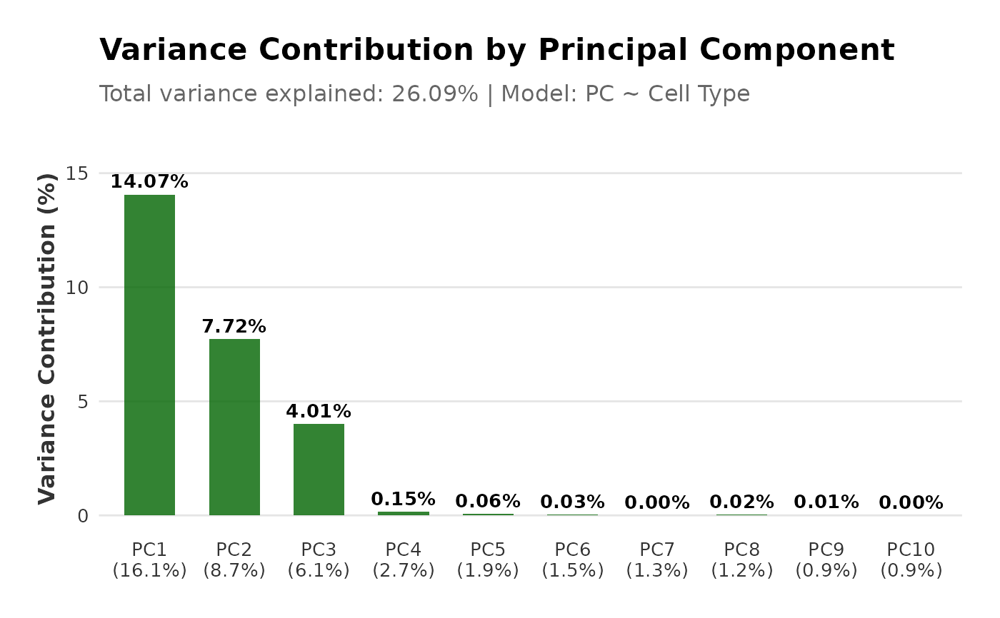
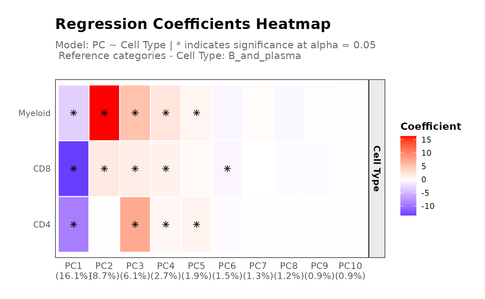
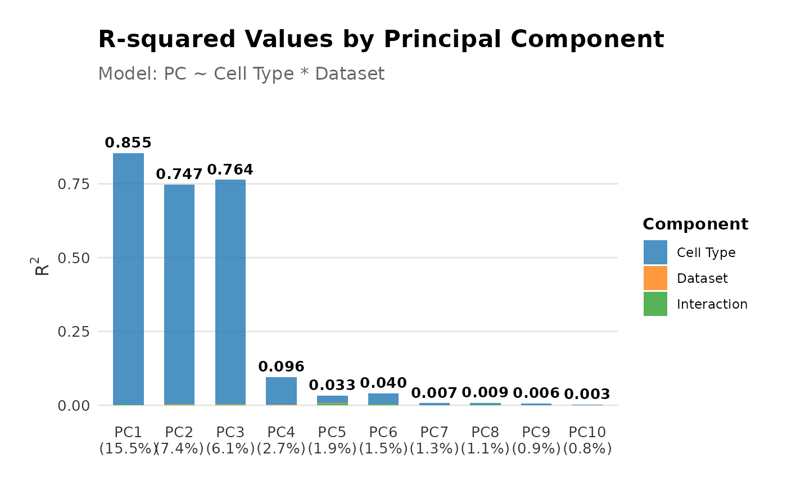
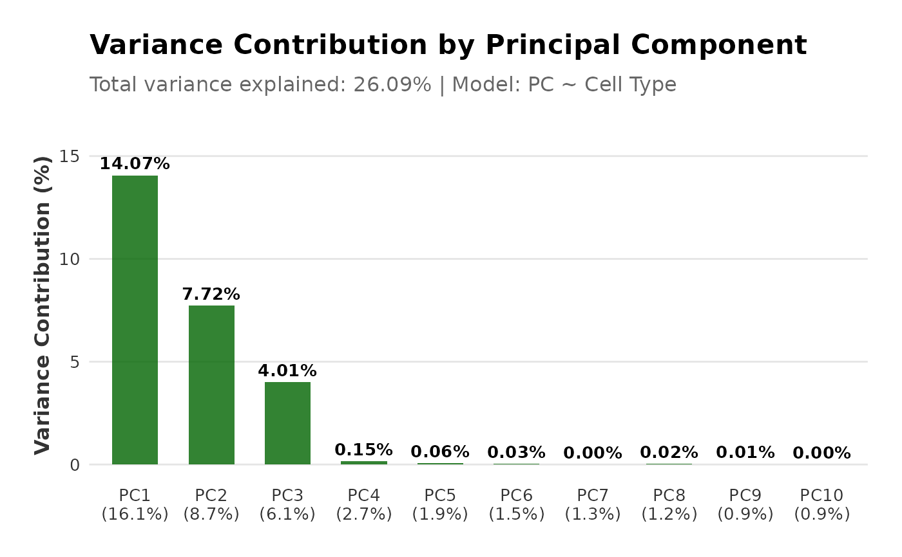
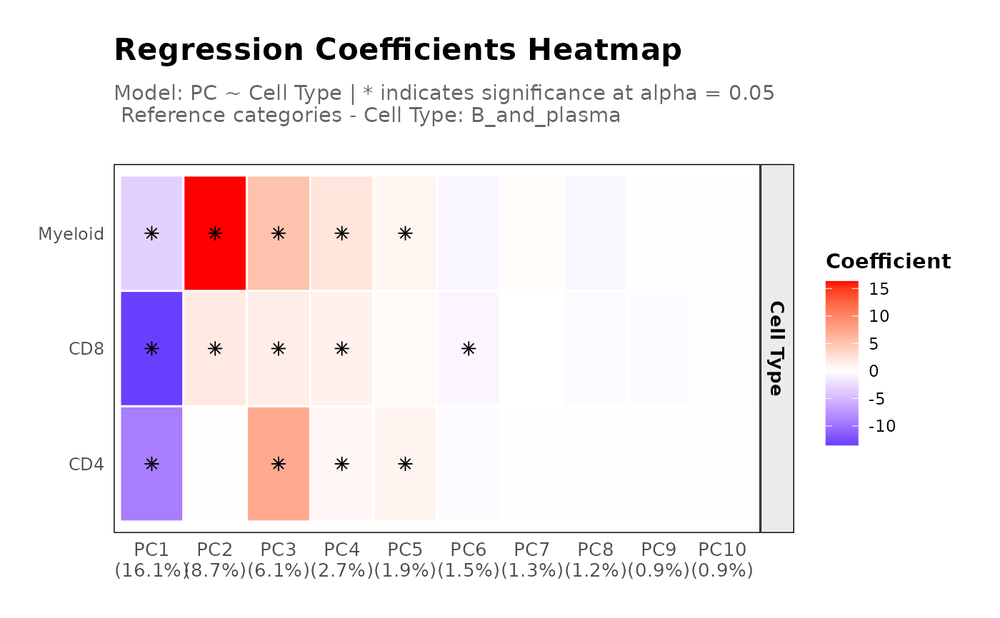
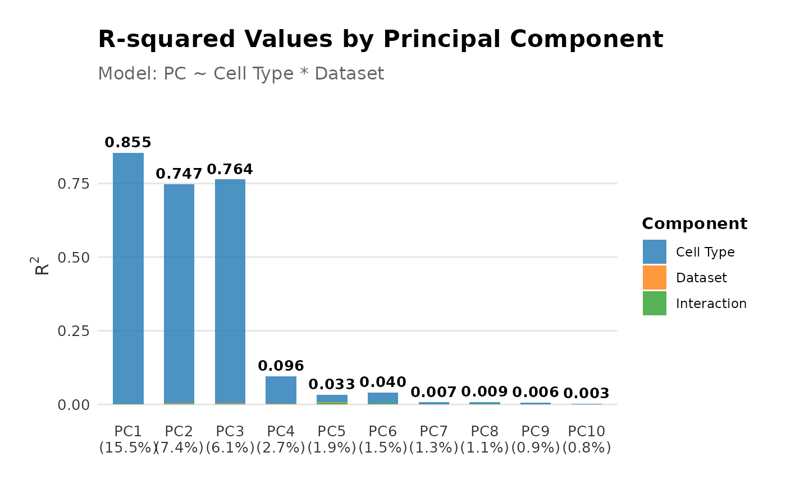

Plot Regression Results on Principal Components
Source:R/plot.regressPCObject.R, R/regressPC.R
regressPC.RdThe S3 plot method generates plots to visualize the results of regression analyses performed on principal components (PCs) against cell types or dataset origin (query vs. reference).
This function performs linear regression of a covariate of interest onto one
or more principal components, based on the data in a SingleCellExperiment
object.
# S3 method for class 'regressPCObject'
plot(x, plot_type = c("r_squared", "p-value"), alpha = 0.05, ...)
regressPC(
reference_data,
query_data = NULL,
ref_cell_type_col,
query_cell_type_col = NULL,
cell_types = NULL,
pc_subset = 1:10,
adjust_method = c("BH", "holm", "hochberg", "hommel", "bonferroni", "BY", "fdr",
"none"),
assay_name = "logcounts"
)Arguments
- x
An object of class
regressPCcontaining the output of theregressPCfunction- plot_type
Type of plot to generate. Options are "r_squared" and "p-value". Default is "r-squared".
- alpha
Significance threshold p-values of coefficients. Default is 0.05.
- ...
Additional arguments to be passed to the plotting functions.
- reference_data
A
SingleCellExperimentobject containing numeric expression matrix for the reference cells.- query_data
A
SingleCellExperimentobject containing numeric expression matrix for the query cells. If NULL, the PC scores are regressed against the cell types of the reference data.- ref_cell_type_col
The column name in the
colDataofreference_datathat identifies the cell types.- query_cell_type_col
The column name in the
colDataofquery_datathat identifies the cell types.- cell_types
A character vector specifying the cell types to include in the plot. If NULL, all cell types are included.
- pc_subset
A numeric vector specifying which principal components to include in the plot. Default is PC1 to PC5.
- adjust_method
A character string specifying the method to adjust the p-values. Options include "BH", "holm", "hochberg", "hommel", "bonferroni", "BY", "fdr", or "none". Default is "BH" (Benjamini-Hochberg). Default is "BH".
- assay_name
Name of the assay on which to perform computations. Default is "logcounts".
Value
The S3 plot method returns a ggplot object representing the specified plot type.
A list containing
summaries of the linear regression models for each specified principal component,
the corresponding R-squared (R2) values,
the variance contributions for each principal component, and
the total variance explained.
Details
The S3 plot method generates, depending on the specified plot type, either the R-squared values or p-values resulting from the regression of principal components onto cell types or dataset origin (query vs. reference). For cell type regression, the plots show how well each PC correlates with different cell types. For dataset regression, the plots compare the PCs between query and reference datasets.
Principal component regression, derived from PCA, can be used to quantify the variance explained by a covariate of interest. Applications for single-cell analysis include quantification of batch effects, assessing clustering homogeneity, and evaluating alignment of query and reference datasets in cell type annotation settings.
Briefly, the \(R^2\) is calculated from a linear regression of the covariate \(B\) of interest onto each principal component. The variance contribution of the covariate effect per principal component is then calculated as the product of the variance explained by the i-th principal component (PC) and the corresponding \(R^2(PC_i | B)\). The sum across all variance contributions by the covariate effects in all principal components gives the total variance explained by the covariate as follows:
$$Var(C|B) = \sum_{i=1}^G \text{Var}(C|PC_i) \times R^2(PC_i | B)$$
where, \(\text{Var}(C \mid PC_i)\) is the variance of the data matrix \(C\) explained by the i-th principal component. See references for details.
References
Luecken et al. Benchmarking atlas-level data integration in single-cell genomics. Nature Methods, 19:41-50, 2022.
See also
regressPC
plot.regressPCObject
Examples
# Load data
data("reference_data")
data("query_data")
# Plot the PC data (no query data)
regress_res <- regressPC(reference_data = reference_data,
ref_cell_type_col = "expert_annotation",
cell_types = c("CD4", "CD8", "B_and_plasma", "Myeloid"),
pc_subset = 1:15)
# Plot results
plot(regress_res, plot_type = "r_squared")
 plot(regress_res, plot_type = "p-value")

# Plot the PC data (with query data)
regress_res <- regressPC(reference_data = reference_data,
query_data = query_data,
ref_cell_type_col = "expert_annotation",
query_cell_type_col = "SingleR_annotation",
cell_types = c("CD4", "CD8", "B_and_plasma", "Myeloid"),
pc_subset = 1:15)
# Plot results
plot(regress_res, plot_type = "r_squared")

plot(regress_res, plot_type = "p-value")

plot(regress_res, plot_type = "p-value")

# Plot the PC data (with query data)
regress_res <- regressPC(reference_data = reference_data,
query_data = query_data,
ref_cell_type_col = "expert_annotation",
query_cell_type_col = "SingleR_annotation",
cell_types = c("CD4", "CD8", "B_and_plasma", "Myeloid"),
pc_subset = 1:15)
# Plot results
plot(regress_res, plot_type = "r_squared")

plot(regress_res, plot_type = "p-value")
